| TP | FP | FN | Precision | Recall | F1 | |
|---|---|---|---|---|---|---|
| method | ||||||
| No sampling | 281 | 35 | 19 | 0.889 | 0.937 | 0.912 |
| SMOTE | 294 | 299 | 6 | 0.496 | 0.980 | 0.658 |
| Borderline-SMOTE | 295 | 271 | 5 | 0.521 | 0.983 | 0.681 |
| ADASYN | 296 | 736 | 4 | 0.287 | 0.987 | 0.444 |
Data Augmentation
Data-Centric AI (Module II)
Matteo Francia
DISI — University of Bologna
m.francia@unibo.it
DISI — University of Bologna
m.francia@unibo.it

Introduction to the coding tools
The sklearn estimator interface
An estimator is a scikit-learn object that learns from data.
- Estimators follow the same API
Why pipelines matter
A machine-learning pipeline is rarely just a classifier.
- A real workflow often includes missing-value handling, scaling, categorical encoding, feature selection, resampling, and then the final estimator.
sklearn.pipeline.Pipeline packages these steps into one object with the same fit, and predict interface.
from sklearn.pipeline import Pipeline
from sklearn.preprocessing import StandardScaler
from sklearn.linear_model import LogisticRegression
pipeline = Pipeline([ # set the pipeline and its hyperparameters
("scaler", StandardScaler()),
("classifier", LogisticRegression(max_iter=2000)),
])
pipeline.fit(X_train, y_train) # train the pipeline
pipeline.predict(X_test) # make predictions on new dataA pipeline chains transformers and a final estimator:
- Every preprocessing step must be learned only from the training data. Why?
StandardScaleris fitted onX_trainonly.
- The test set is transformed using the training-set scaling parameters.
Recalling validation and cross validation
When evaluating different hyperparameters for estimators, we cannot do it on the test set, as this would lead to data leakage.
- Hyperparameters can be tweaked until the estimator performs optimally, but knowledge about the test set “leak” into the model (= cheating)
To solve this problem, a part of the train set can be held out as a so-called “validation set”
- Training on the training set, hyperparameter tuning on the validation set, and final evaluation on the test set.
- By partitioning the available data into three sets, we (1) reduce the number of samples which can be used for learning, and (2) the results can depend on a particular random choice for (train, validation) sets.
Cross-validation is a solution to this problem
Hyper-parameter optimization with cross-validation
HPO (e.g., GridSearchCV) trains and evaluates many pipeline configurations using cross-validation. Why?
- Pipeline hyperparameters are addressed with as
step_name__parameter_name. - Each fold fits preprocessing and the classifier only on the training part of that fold.
from sklearn.model_selection import GridSearchCV, StratifiedKFold
cv = StratifiedKFold(n_splits=5, shuffle=True, random_state=42) # why cross validation?
param_grid = {
"classifier__C": [0.01, 0.1, 1, 10],
"classifier__class_weight": [None, "balanced"],
}
search = GridSearchCV( # alternative to GridSeach?
estimator=pipeline,
param_grid=param_grid,
scoring="f1", # why f1?
cv=cv,
)
search.fit(X_train, y_train)
search.best_params_Data augmentation
The imbalanced classification problem
Many important binary classification problems have one class that is much rarer than the other.
Examples
Fraud detection, medical diagnosis, safety incidents, customer churn, credit default, and equipment failures.We call the frequent class the majority class and the rare class the minority class.
- Usually, the minority class is the positive class:
1.
When classes are imbalanced, accuracy can be misleading. Why?
Answer
If only 5% of customers churn, a classifier that always predicts “no churn” reaches 95% accuracy while finding no churners at all.High accuracy can hide every missed positive
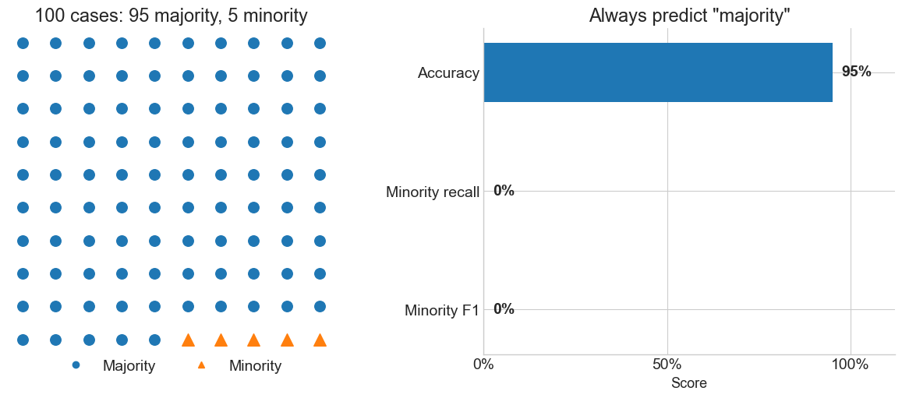
How can we handle class imbalance?
Find better metrics
Depending on the case study, optimize different metrics while training the model:
- Precision: among predicted positives, how many were actually positive?
- Recall or sensitivity: among actual positives, how many did we find?
- Specificity: among actual negatives, how many did we correctly reject?
- F1 score: harmonic mean of precision and recall.
Methods for handling imbalance
- Class weights: make minority-class errors more expensive.
- Sampling: random (?), statified (?), undersampling, and oversampling.
- SMOTE and variants: synthesize minority examples.
Sampling methods
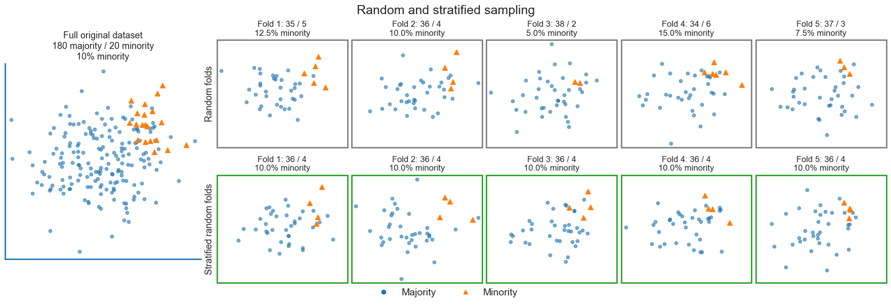
How resampling changes the training set
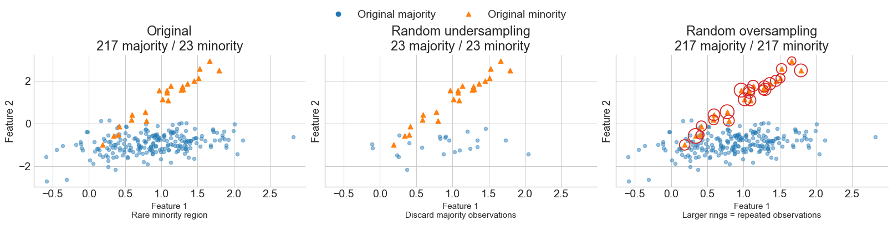
Data augmentation
Data augmentation applies label-preserving transformations: image rotations, sensor noise, audio crops, or text perturbations.
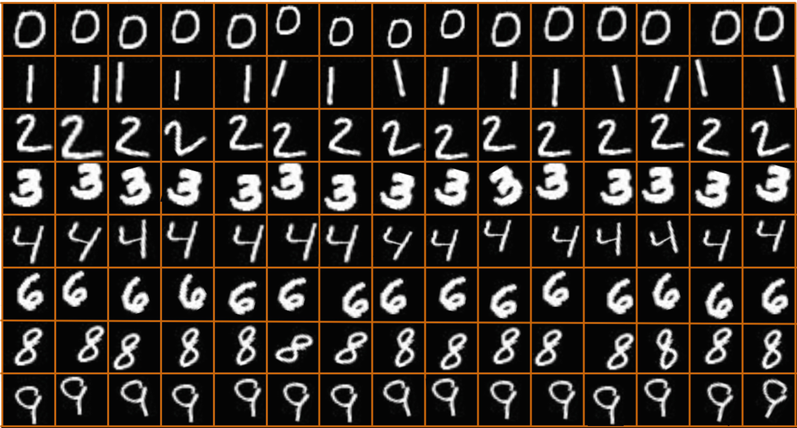
Data augmentation in MNIST
What about tabular data?
SMOTE (Chawla et al. 2002) creates tabular rows by interpolation in feature space.
- Simple intuition: fill sparse minority regions instead of duplicating existing minority-class observations.
- Risk: interpolation may create impossible records: could the generated record exist in the real data?
For a minority point \(x_i\), it selects a nearby minority point \(x_j\) and creates: \(x_{new} = x_i + \lambda * (x_j - x_i)\)
SMOTE: move toward a minority neighbor
Each cross (x) uses a different interpolation weight \(\lambda\).
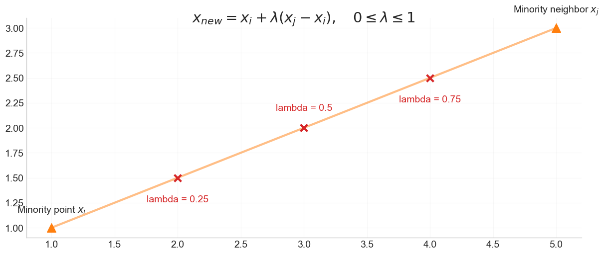
SMOTE: move toward a minority neighbor
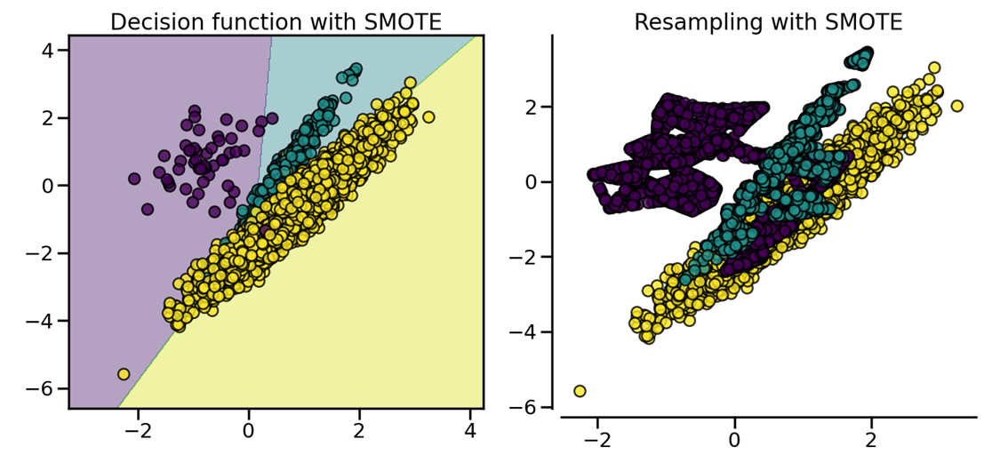
Decision function
Why scaling before SMOTE?
Why scaling before SMOTE?
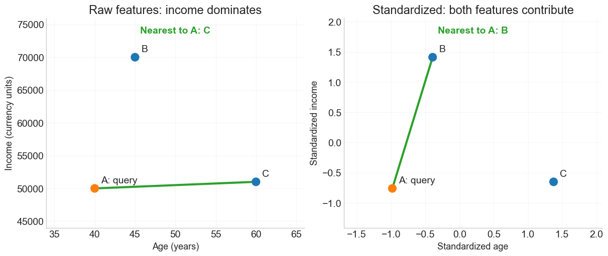
Why scaling before SMOTE?

Borderline-SMOTE: which points are in danger?
Borderline-SMOTE focuses on minority observations near the class boundary (Han et al. 2005).
- These are the points a classifier is most likely to confuse with the majority class.
- This can help boundary recall, but noisy or mislabeled boundary points can be reinforced.
For each minority point, find m_neighbors nearest training rows from both classes.
- Count majority neighbors as \(a_i\) out of \(m\).
- Safe: \(a_i < \frac{m}{2}\); danger: \(\frac{m}{2} \leq a_i < m\); noise: \(a_i=m\).
- Noise is a neighborhood label, not proof of an incorrect class.
- Choose danger points as generation seeds.
k_neighborsthen finds minority neighbors for interpolation.
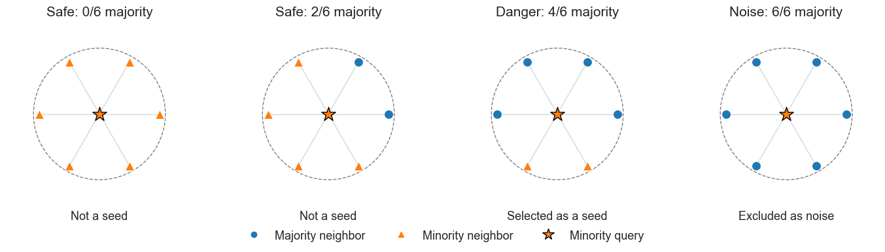
Borderline-SMOTE: which points are in danger?
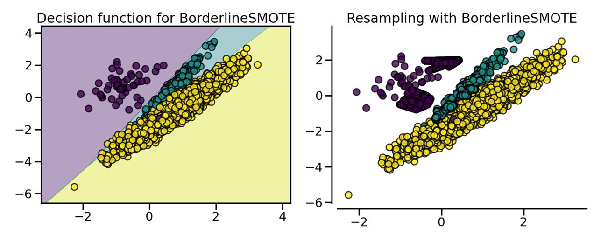
Decision function
ADASYN
ADASYN estimates local difficulty from nearest neighbors (He et al. 2008).
- Minority observations surrounded by many majority observations receive larger sampling weights.
- Creates more synthetic minority examples around locally difficult observations.
How?
- Count majority labels among the \(k\) nearest training neighbors of each minority point.
- Define difficulty as \(r_i=\frac{a_i}{k}\).
- For a budget of \(G\) new rows, allocate \(g_i \approx G \frac{r_i}{\sum_j r_j}\) to seed \(i\) (spread \(G\) over all minority seeds).
- 0-majority neighbors gives zero allocation; a larger majority fraction gives a larger allocation.
- ADASYN has no separate noise exclusion, so an isolated minority point can receive the largest weight.
ADASYN: compare the same four minority queries
The 16 minority seeds share 56 new rows; the plots show only the four starred queries from the previous example.
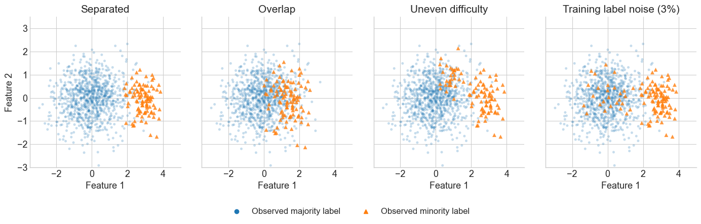
ADASYN
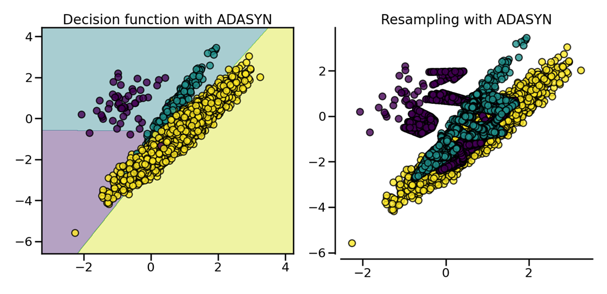
Decision function
When should we try each sampler?
| Method | Worth trying when | Main risk |
|---|---|---|
| SMOTE | Minority regions are broadly undersampled. | Interpolation bridges clusters or outliers. |
| Borderline-SMOTE | Reliable labels define a difficult class boundary. | Boundary noise is reinforced. |
| ADASYN | Difficulty varies across regions and labels are reliable. | Outliers attract too many new rows. |
The classifier, feature scaling, neighbor count, and class overlap can change the ranking.
A controlled comparison across four conditions
- Each dataset has 1,000 training rows and 3,000 independent test rows, with 10% minority.
- Use a 7-nearest-neighbor classifier and request balanced classes from each sampler.
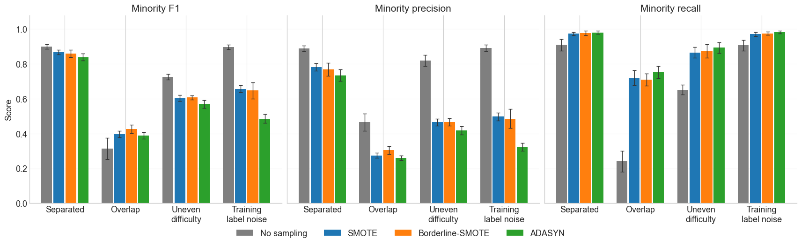
Compare F1, precision, and minority recall
Mean and standard deviation across 10 independent train/test draws, using seeds 42 through 51.
- Higher recall does not necessarily give higher F1.
- These results use one fixed classifier with no tuning; they do not establish a universal sampler ranking.

Why can no augmentation have higher F1?
\[F_1=\frac{2PR}{P+R}=\frac{2TP}{2TP+FP+FN}.\]
- Synthetic rows can increase class overlap or reproduce label errors.
- Oversampling can recover more positives while also predicting more false positives.
- If precision falls enough, higher recall can still give lower F1.
- With noisy training labels, samplers can generate more rows around incorrectly labeled points.
Trace the F1 difference through errors in “Training label noise”
- Separated classes: the untreated baseline has the highest mean F1.
- Overlap: Borderline-SMOTE has the highest mean F1 in this experiment.
- Uneven difficulty: ADASYN recovers more positives, but the untreated baseline has higher mean F1.
- Training label noise: ADASYN has the highest recall and the lowest mean F1.
- Concentrating on difficult points can reinforce incorrect labels.
Pipelines with resampling need imblearn
sklearn.pipeline.Pipeline is designed for transformers and estimators.
estimator = obj.fit(data, targets)
imblearn.pipeline.Pipeline is designed for transformers, resamplers, and estimators.
- Resampling is part of training, so it must happen inside the pipeline and inside each cross-validation fold.
- To resample a data sets, each sampler implements a
fit_resamplemethod:data_resampled, targets_resampled = obj.fit_resample(data, targets)
Create a deliberately imbalanced dataset
We will use a synthetic binary classification dataset: y=1 is a rare high-risk event, such as fraud, churn, default, or failure.
| count | rate | |
|---|---|---|
| high_risk | ||
| 0 | 4658 | 0.932 |
| 1 | 342 | 0.068 |
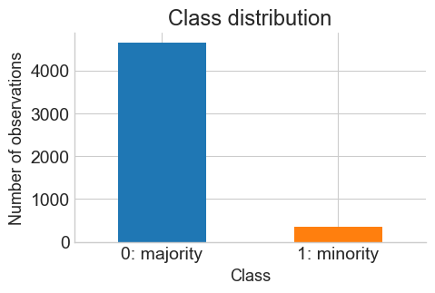
Visual intuition
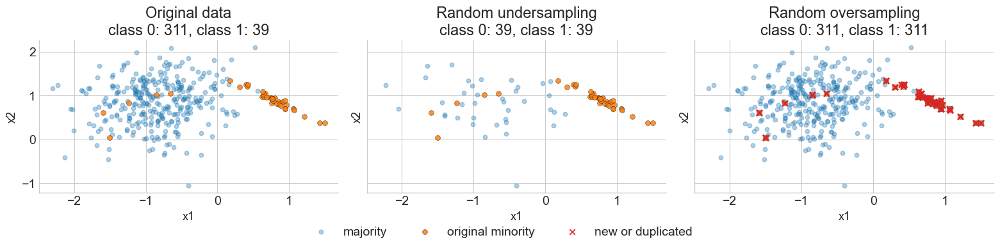
- Random under sampling decreases the majority count by sampling existing observations.
- Random oversampling increases the minority count by repeating existing observations, so the red crosses sit directly on top of known points.
Visual intuition
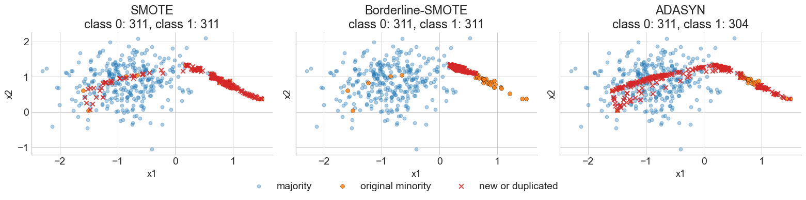
- SMOTE fills segments between nearby minority points.
- This smooths sparse minority regions, but assumes that interpolation produces valid records.
- Borderline-SMOTE tries to synthesize near the frontier between classes.
- It is useful when boundary recall matters, but it can be sensitive to overlap and label noise.
- ADASYN places more synthetic examples in locally difficult regions.
- Compared with SMOTE, it often concentrates more strongly near areas where the majority class surrounds the minority class.
Baseline pipeline
Code
Pipeline(steps=[('preprocessing', StandardScaler()),
('classifier',
LogisticRegression(max_iter=2000, random_state=42))])In a Jupyter environment, please rerun this cell to show the HTML representation or trust the notebook. On GitHub, the HTML representation is unable to render, please try loading this page with nbviewer.org.
Parameters
Parameters
Parameters
Candidate pipelines
We compare seven strategies:
- No imbalance treatment (baseline pipeline).
class_weight="balanced".- Random undersampling.
- Random oversampling.
- SMOTE.
- ADASYN.
- Borderline-SMOTE.
pipelines = {
"No treatment": Pipeline(
[("preprocessing", preprocessor), ("classifier", logistic_regression())]
),
"Class weight": Pipeline(
[("preprocessing", preprocessor), ("classifier", logistic_regression(class_weight="balanced"))]
),
"Random undersampling": ImbPipeline(
[("preprocessing", preprocessor), ("sampler", RandomUnderSampler(random_state=RANDOM_STATE)), ("classifier", logistic_regression())]
), # ...
}Confusion matrices
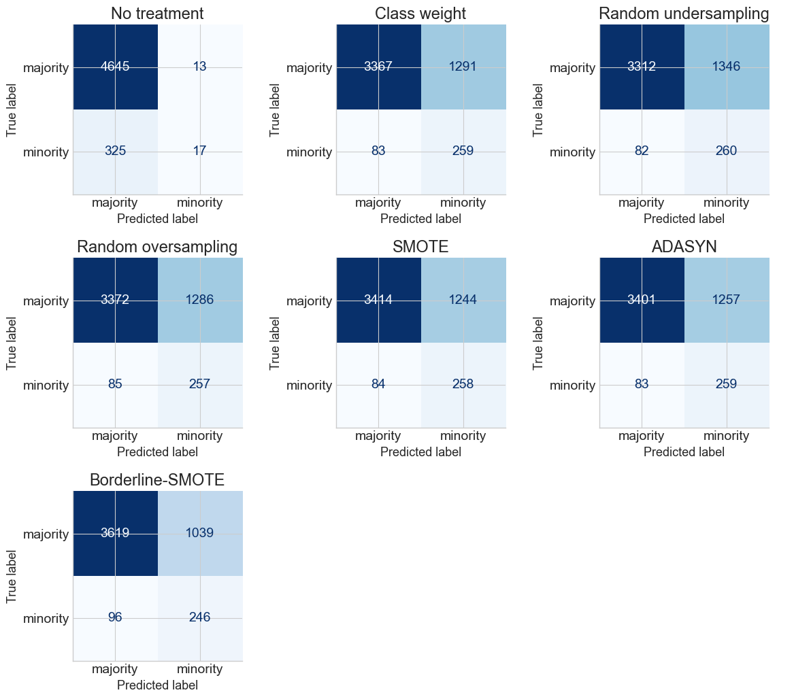
Comparison table
Mean cross-validation scores at threshold 0.5; shaded, bold values mark each metric’s maximum. F1_std reports fold-to-fold variability.
- Accuracy hides missed positives: no treatment reaches 93.2% accuracy, but only 5.0% recall (about 95% of positives are missed).
- More recall, more false alarms: resampling and class weights recover about 72-76% of positives, while precision falls to about 16-19%.
- Best mean F1 here: Borderline-SMOTE (0.303). Its recall is lower than the other treatments, but its precision is higher.
| Accuracy | Precision | Recall | Specificity | F1 | F1_std | |
|---|---|---|---|---|---|---|
| method | ||||||
| Borderline-SMOTE | 0.773 | 0.192 | 0.719 | 0.777 | 0.303 | 0.017 |
| SMOTE | 0.734 | 0.172 | 0.754 | 0.733 | 0.281 | 0.021 |
| ADASYN | 0.732 | 0.172 | 0.757 | 0.730 | 0.279 | 0.017 |
| Class weight | 0.725 | 0.168 | 0.757 | 0.723 | 0.275 | 0.022 |
| Random oversampling | 0.726 | 0.167 | 0.751 | 0.724 | 0.274 | 0.022 |
| Random undersampling | 0.714 | 0.163 | 0.760 | 0.711 | 0.268 | 0.017 |
| No treatment | 0.932 | 0.552 | 0.050 | 0.997 | 0.091 | 0.040 |
From scores to decisions
Precision is the fraction of predicted positives that are correct: \(\frac{TP}{TP + FP}\).
Recall is the fraction of actual positives recovered: \(\frac{TP}{TP + FN}\).
- High recall but low precision: recover most actual positives, with a large fraction of false positives among positive predictions.
- High precision but low recall: positive predictions are mostly correct, but many actual positives are missed.
A model produces a positive-class probability \(p\) and predicts positive when \(p \ge thr\).
- The threshold \(thr\) decides which scores become positive predictions
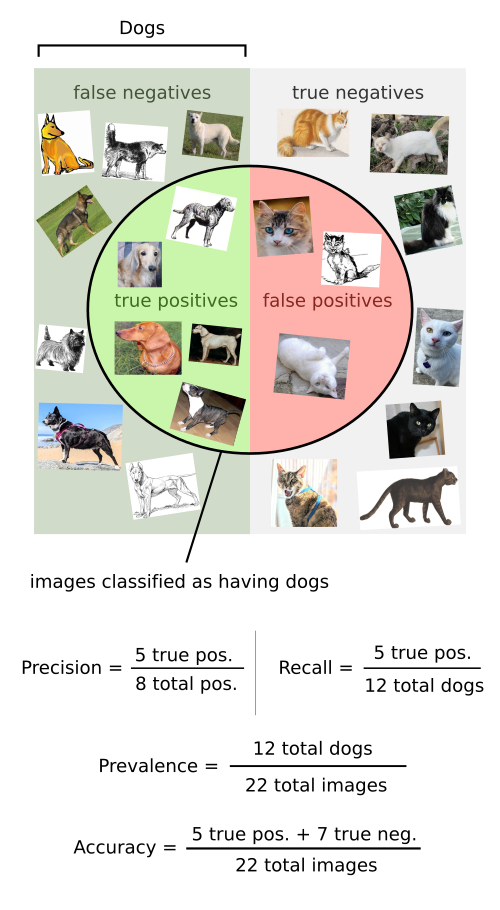
Threshold adjustment
The right threshold depends on the operational cost of each error type. Lowering \(thr\) changes the confusion matrix.
predictusually applies a threshold of0.5. In a high-cost FN scenario, such as medical screening, we may prefer a lower threshold.
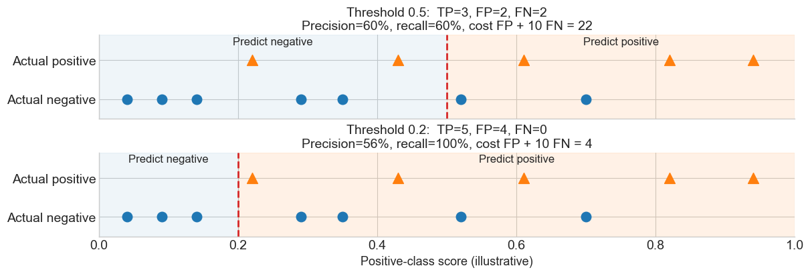
Precision
- If \(thr\) was too high, the new results may all be TP, which will increase precision.
- If \(thr\) was about right or low, further lowering it will introduce FP, decreasing precision.
Recall: lowering \(thr\) labels more cases as positive, this can turn some FN into TP, increasing recall.
Threshold adjustment
Increasing \(thr\) asks for more confidence before predicting the positive class, so recall tends to fall and precision may rise.
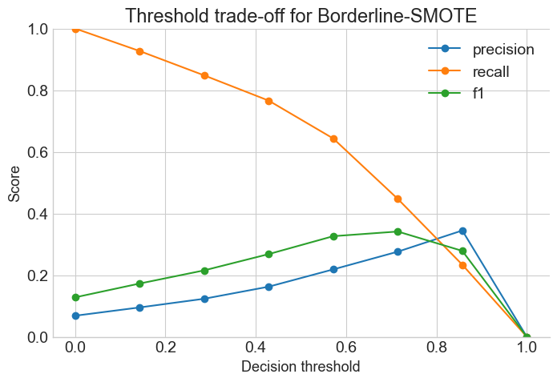
Precision-recall curves
Each colored curve represents one method (SMOTE, ADASYN, etc.), evaluated against the same true minority-class labels (y=1) using out-of-fold probabilities.
- Moving along a curve changes the classification threshold: lower thresholds recover more positives; higher thresholds predict fewer positives.
- AP is a number in the legend for each method, summarizing its entire curve. It is not a separate line or an average across methods.
- \(AP=\sum_n (R_n-R_{n-1})P_n\): precision is weighted by the increase in recall at each step. Higher AP means a better ranking of minority cases.
- The single black dashed line is the minority-class proportion in the original data (
y.mean()): the expected precision of random ranking. It is shared by every method and is not an AP score. - The outlined circles and threshold labels highlight only the method with the highest mean cross-validation F1 at threshold 0.5.
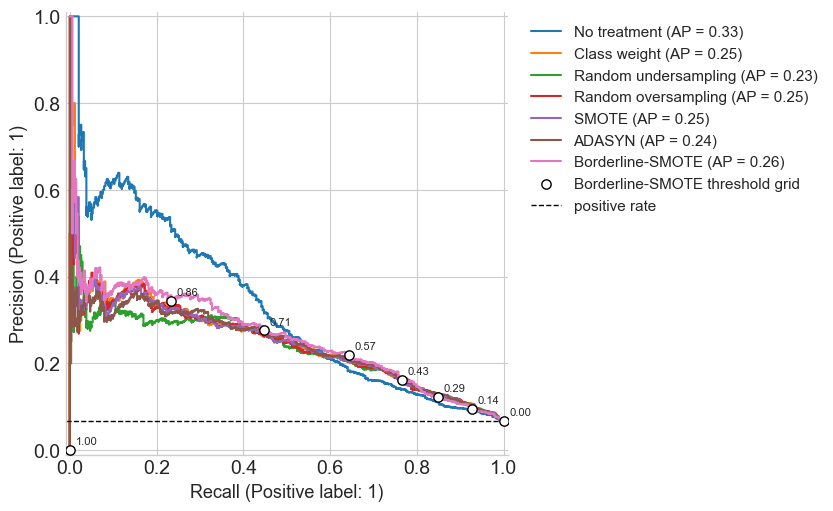
Choose a threshold for high-cost false negatives
Suppose a false negative costs 10 times as much as a false positive.
- A false positive creates an unnecessary follow-up, while a false negative misses a truly high-risk case.
- With this cost ratio, the best threshold may accept more false positives if doing so prevents enough false negatives.
For the selected method and each threshold, we compute the confusion matrix and then calculate:
- \(total\ cost = FP \times cost(FP) + FN \times cost(FN)\)
With \(cost(FP)=1\) and \(cost(FN)=10\), this becomes:
- \(total\ cost = FP + 10 \times FN\)
- If a threshold produces 961 false positives and 101 false negatives, then: \(total\ cost = 961 + 10 \times 101 = 1971\)
| method | threshold | false_positives | false_negatives | total_cost | precision | recall | f1 | |
|---|---|---|---|---|---|---|---|---|
| 47 | Borderline-SMOTE | 0.52 | 961 | 101 | 1971 | 0.2 | 0.705 | 0.312 |
Leakage warning
Resampling is part of model training: it must be learned from the training data only.
- Do not apply SMOTE or oversampling before splitting the data. Why?
- If synthetic points are created before a train/test split, information from validation/test observations can leak into the training set.
- The same rule applies to cross-validation: resampling must happen inside each training fold, not once globally before cross-validation.
- This is why we use
imblearn.pipeline.Pipelinewhenever the pipeline contains a sampler.
How information leaks through a synthetic row
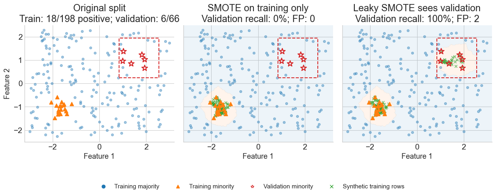
Leakage can hide a missing minority region

Leakage demonstration
- The wrong structure applies SMOTE before cross-validation.
- The right structure places SMOTE inside an
imblearnpipeline, so SMOTE is fitted only on each training fold.
Code
X_scaled = preprocessor.fit_transform(X)
X_leaky, y_leaky = SMOTE(random_state=RANDOM_STATE).fit_resample(X_scaled, y)
leaky_pipeline = Pipeline(
[("classifier", logistic_regression())]
)
leaky_fold_results, _ = evaluate_pipeline(
"Leaky SMOTE before CV",
leaky_pipeline,
pd.DataFrame(X_leaky),
pd.Series(y_leaky),
cv,
)
# Reuse the identical training-only SMOTE results already computed above.
right_fold_results = fold_results.loc[fold_results["method"] == "SMOTE"].assign(method="SMOTE inside CV")| accuracy | precision | recall | specificity | f1 | |
|---|---|---|---|---|---|
| method | |||||
| Leaky SMOTE before CV | 0.758 | 0.746 | 0.782 | 0.733 | 0.763 |
| SMOTE inside CV | 0.734 | 0.172 | 0.754 | 0.733 | 0.281 |
Exercises: exploring resampling methods with imblearn
imbalanced-learn (imblearn) extends the scikit-learn estimator API with samplers.
- It provides over/undersampling, sampler ensembles, metrics, and benchmark datasets.
Official documentation:
Mammography: a real imbalanced benchmark
The benchmark contains 11,183 observations, six numerical features, and 260 minority examples (about 2.3%).
- We predict the minority class (
1) versus the majority (0). The loader returns anonymous feature columns, so usefeature_1tofeature_6.
Code
m_dataset = fetch_datasets(filter_data=("mammography",))["mammography"]
X_mammography = pd.DataFrame(m_dataset.data, columns=[f"feature_{i}" for i in range(1, 7)])
y_mammography = pd.Series((m_dataset.target == 1).astype(int), name="minority") # Convert the loader's labels (-1, +1) into majority 0 and minority 1.
X_mammography.info()<class 'pandas.DataFrame'>
RangeIndex: 11183 entries, 0 to 11182
Data columns (total 6 columns):
# Column Non-Null Count Dtype
--- ------ -------------- -----
0 feature_1 11183 non-null float64
1 feature_2 11183 non-null float64
2 feature_3 11183 non-null float64
3 feature_4 11183 non-null float64
4 feature_5 11183 non-null float64
5 feature_6 11183 non-null float64
dtypes: float64(6)
memory usage: 524.3 KBInspect the observations
What does one row contain? Which column is the prediction target?
| feature_1 | feature_2 | feature_3 | feature_4 | feature_5 | feature_6 | minority | |
|---|---|---|---|---|---|---|---|
| 0 | 0.230020 | 5.072578 | -0.276061 | 0.832444 | -0.377866 | 0.480322 | 0 |
| 1 | 0.155491 | -0.169390 | 0.670652 | -0.859553 | -0.377866 | -0.945723 | 0 |
| 2 | -0.784415 | -0.443654 | 5.674705 | -0.859553 | -0.377866 | -0.945723 | 0 |
| 3 | 0.546088 | 0.131415 | -0.456387 | -0.859553 | -0.377866 | -0.945723 | 0 |
| 4 | -0.102987 | -0.394994 | -0.140816 | 0.979703 | -0.377866 | 1.013566 | 0 |
Inspect the feature scales. Are they in the same range?
| feature_1 | feature_2 | feature_3 | feature_4 | feature_5 | feature_6 | |
|---|---|---|---|---|---|---|
| count | 11183.000 | 11183.000 | 11183.000 | 11183.000 | 11183.000 | 11183.000 |
| mean | 0.000 | 0.000 | 0.000 | -0.000 | -0.000 | 0.000 |
| std | 1.000 | 1.000 | 1.000 | 1.000 | 1.000 | 1.000 |
| min | -0.784 | -0.470 | -0.592 | -0.860 | -0.378 | -0.946 |
| 25% | -0.784 | -0.470 | -0.592 | -0.860 | -0.378 | -0.946 |
| 50% | -0.109 | -0.395 | -0.231 | -0.860 | -0.378 | -0.946 |
| 75% | 0.314 | -0.076 | 0.220 | 0.820 | -0.378 | 1.017 |
| max | 31.508 | 5.086 | 29.478 | 9.591 | 23.617 | 1.949 |
Visualization: first 2 PC of the standardized features. Are classes well separated?
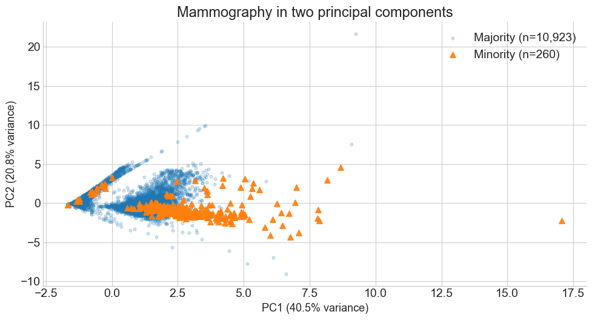
| feature_1 | feature_2 | feature_3 | feature_4 | feature_5 | feature_6 | |||||||
|---|---|---|---|---|---|---|---|---|---|---|---|---|
| mean | std | mean | std | mean | std | mean | std | mean | std | mean | std | |
| minority | ||||||||||||
| 0 | -0.02 | 0.98 | 0.00 | 1.01 | 0.01 | 1.01 | -0.04 | 0.95 | -0.07 | 0.71 | -0.03 | 0.99 |
| 1 | 0.77 | 1.30 | -0.12 | 0.52 | -0.31 | 0.30 | 1.67 | 1.47 | 3.06 | 3.47 | 1.10 | 0.68 |
One train/validation split for all exercises
Use a 70% training / 30% validation split and the same tree settings throughout.
- Fit preprocessing, class weighting, and sampling using training rows only.
- Treat validation as a development set: compare methods here, but reserve a separate test set for a final generalization claim.
Code
m_X_train, m_X_valid, m_y_train, m_y_valid = train_test_split(
X_mammography, y_mammography, test_size=0.30,
stratify=y_mammography, random_state=42,
)
m_tree_params = dict(max_depth=5, min_samples_leaf=5, random_state=42) # Use `m_tree_params` for every exercise.
def mammography_scores(model, X_valid, y_valid):
predicted = model.predict(X_valid)
_, fp, fn, _ = confusion_matrix(y_valid, predicted, labels=[0, 1]).ravel()
return {
"Accuracy": accuracy_score(y_valid, predicted),
"Balanced accuracy": balanced_accuracy_score(y_valid, predicted),
"Precision": precision_score(y_valid, predicted, zero_division=0),
"Recall": recall_score(y_valid, predicted, zero_division=0),
"F1": f1_score(y_valid, predicted, zero_division=0),
"FP": fp, "FN": fn,
}Exercise 1: a scikit-learn decision-tree pipeline
Build and fit an unweighted decision tree using the original class distribution.
- How many positives are missed?
- Rank the fitted tree’s
feature_importances_: which features dominate?
Code
# Fill in the estimator and uncomment: use DecisionTreeClassifier(**m_tree_params).
# m_baseline = Pipeline([("tree", ...)])
# m_baseline.fit(m_X_train, m_y_train)
# mammography_scores(m_baseline, m_X_valid, m_y_valid)
# TODO: rank m_baseline.named_steps["tree"].feature_importances_
# using m_X_train.columns as the feature names.Exercise 2: give the classes balanced weights
Clone the baseline and set tree__class_weight="balanced", then refit on the same original training rows.
- Did minority F1 improve? Did the important features change? Class weighting does not guarantee a better result on every metric.
Exercise 3: an imblearn pipeline with SMOTE
Chain StandardScaler, SMOTE, and an unweighted decision tree.
- Use
random_state=42for SMOTE and the samem_tree_paramsas before. - Fit the whole pipeline on training data and compare with Exercises 1 and 2.
Exercise 4: SMOTE with and without scaling
Disable the SMOTE pipeline’s scaler with "passthrough", refit, and compare with scaled SMOTE.
- Repeat after changing feature units using the factors below.
- Why can scaling change SMOTE even though the classifier is a tree? Can scaling after SMOTE repair its neighbor choices?
Code
# Fill in "passthrough", then fit and evaluate as above.
# m_unscaled = clone(m_smote).set_params(scaler=...)
# Repeat with changed units: fit on train_units, evaluate on valid_units.
m_units = [1, 10, 100, 0.01, 0.001, 1000]
m_X_train_units = m_X_train * m_units
m_X_valid_units = m_X_valid * m_unitsExercise 5: Borderline-SMOTE
Clone the scaled SMOTE pipeline and replace its sampler with BorderlineSMOTE(random_state=42) (BorderlineSMOTE).
- Keep the scaling, tree, and split fixed. Compare with ordinary scaled SMOTE.
- Which errors change, and does F1 improve? Explain why concentrating on boundary observations might help or amplify overlap and noise.
Exercise Solution
Show the solution
m_baseline = Pipeline([("tree", DecisionTreeClassifier(**m_tree_params))])
m_weighted = clone(m_baseline).set_params(tree__class_weight="balanced")
m_smote = ImbPipeline([
("scaler", StandardScaler()),
("sampler", SMOTE(random_state=42)),
("tree", DecisionTreeClassifier(**m_tree_params)),
])
m_unscaled = clone(m_smote).set_params(scaler="passthrough")
m_borderline = clone(m_smote).set_params(sampler=BorderlineSMOTE(random_state=42))
m_models = {
"Tree": m_baseline, "Weighted tree": m_weighted,
"SMOTE": m_smote, "SMOTE without scaling": m_unscaled,
"Borderline-SMOTE": m_borderline,
}
for model in m_models.values():
model.fit(m_X_train, m_y_train)
display(pd.DataFrame({
name: mammography_scores(model, m_X_valid, m_y_valid)
for name, model in m_models.items()
}).T.round(3))
display(pd.DataFrame({
name: m_models[name].named_steps["tree"].feature_importances_
for name in ["Tree", "Weighted tree"]
}, index=m_X_train.columns).sort_values("Tree", ascending=False).round(3))
# Repeat the SMOTE comparison with the feature factors from Exercise 4.
m_unit_models = {
name: clone(m_models[name]).fit(m_X_train_units, m_y_train)
for name in ["SMOTE", "SMOTE without scaling"]
}
display(pd.DataFrame({
name: mammography_scores(model, m_X_valid_units, m_y_valid)
for name, model in m_unit_models.items()
}).T.round(3))
pd.Series(
m_unit_models["SMOTE without scaling"].named_steps["tree"].feature_importances_,
index=m_X_train.columns, name="SMOTE without scaling",
).sort_values(ascending=False).round(3).to_frame()
References
Chawla, Nitesh V., Kevin W. Bowyer, Lawrence O. Hall, and W. Philip Kegelmeyer. 2002. “SMOTE: Synthetic Minority over-Sampling Technique.” Journal of Artificial Intelligence Research 16: 321–57. https://doi.org/10.1613/jair.953.
Han, Hui, Wen-Yuan Wang, and Bing-Huan Mao. 2005. “Borderline-SMOTE: A New over-Sampling Method in Imbalanced Data Sets Learning.” In Advances in Intelligent Computing, edited by De-Shuang Huang, Xiao-Ping Zhang, and Guang-Bin Huang, vol. 3644. Lecture Notes in Computer Science. Springer. https://doi.org/10.1007/11538059_91.
He, Haibo, Yang Bai, Edwardo A. Garcia, and Shutao Li. 2008. “ADASYN: Adaptive Synthetic Sampling Approach for Imbalanced Learning.” 2008 IEEE International Joint Conference on Neural Networks (IEEE World Congress on Computational Intelligence), 1322–28. https://doi.org/10.1109/IJCNN.2008.4633969.